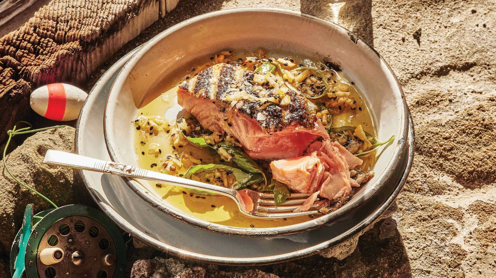
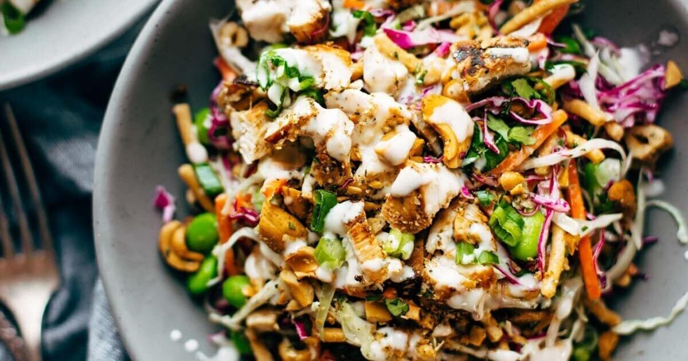

Baked Salmon with Amazing Lemon Sauce

This lemon sauce is a showstopper. It’s creamy and rich and light all at the same time. It starts
with
shallots and gets
infused with a few sprigs of fresh thyme and finished with a little sizzle of lemon juice, and it
feels
like there
should be more to explain but really, that is the beauty of it.
Read More
Cashew Crunch Salad with Sesame Dressing

What’s it called when you want something that tastes really, really good… but is also basically a
high
pile of fresh,
vibrant, feel-good-in-your-body vegetables? You call it Cashew Crunch Salad, that’s what you call
it. That’s an actual transcript of my internal dialogue. These are the terms I think in: tastes
amazing, mostly healthy,
still fills me up.
Read More
Harissa Chickpeas with Whipped Feta
I like to lightly smash the chickpeas to help them not feel so chickpea-y, if you know what I mean?
(My fellow chickpea
skeptics do know what I mean.) So I use a potato masher to just give them just a few good smooshes
and make the texture
into something more sticky and saucy.
Read
More